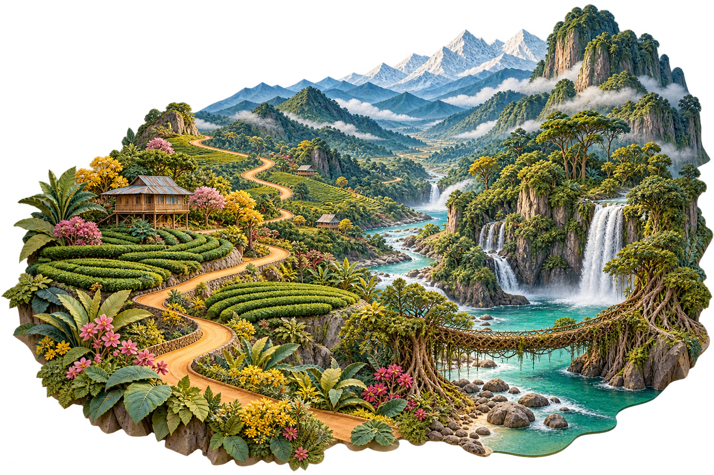
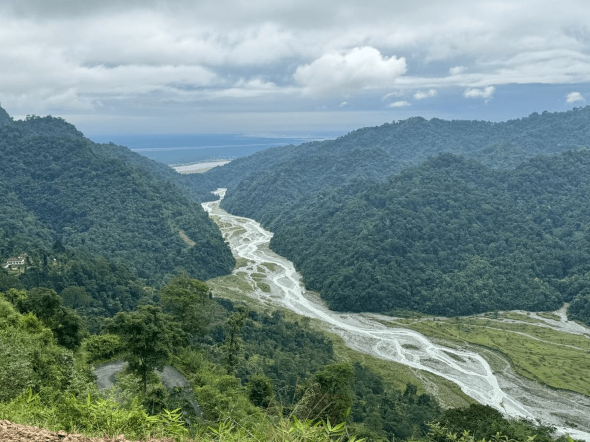

Leave the
ordinary
behind.
Seven sisters. A thousand little discoveries.
Come for the landscapes. Stay for the people.

A different side of India.
Some places you visit.
This one stays with you.
Morning tea with your host. A river with nowhere to rush.
A turn in the road that wasn’t in the guidebook.
We’re a small Northeast team opening the door to the home we know.
Get to know the neighbourhood
Seven sisters.
Seven different worlds.
Not one destination. Seven places with
their own landscapes, kitchens and stories.
Pick a sister. Follow your curiosity.
Follow what pulls you here
What’s your kind
of getting away?
Bringing your whole crew?Thoughtful retreats, educational field trips and group journeys.
For the ones who take the long way
Two wheels.
A different world.
From Guwahati’s first light to Nagaland’s festival grounds. Ride the hills, meet the people, and make the road part of the story.

Someone who calls it home.
The Rainbow Butterflies way
We don’t just
know the way.
We’re from here.
Founded by Bonjeet Khamon, The Rainbow Butterflies brings together local guides, homestay families, drivers and cooks across the Northeast.
We plan around real conversations: what you love, how you like to travel, and the people and places that make a journey meaningful.
Your story starts with a conversation
No fixed packages.
Just your kind of journey.
Bring your curiosity
A destination, a feeling, a few spare days. Tell us what you have in mind.
We’ll find your rhythm
Talk through your pace, stays, interests and budget with a real person.
Make the road your own
Refine your personal itinerary, then set off with our team within reach.
Where should I start if I’ve never been to the Northeast?
Start with the experiences you want: tea and wildlife, forest walks, village stays, food or festivals. Share your dates and pace, and the team can suggest a route that fits. You don’t have to visit all seven states in one trip.
Can you plan around a slower pace or assistance needs?
Yes, the team offers personalised, low-pace travel coordination. Tell them about mobility, dietary or other assistance needs early so route suitability, stays and support can be discussed honestly.
Are these fixed tours with fixed prices?
No. The journeys shown here are starting points for a conversation. The final route, inclusions, availability and price are agreed personally with the team. No payment is collected through this website.
What about permits and changing road conditions?
Requirements depend on your nationality, destination and route. The team will check current access requirements and local conditions while planning. A suggested route is always subject to those checks.
Do you organise college trips and corporate retreats?
Yes. The company plans educational and agricultural trips, field visits, corporate offsites and group journeys. Include your group size, institution or company, and trip objectives in the enquiry.
Somewhere out there is a story with your name on it.